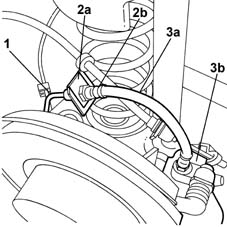

3330E30 FLEXIBLE PIPE (one), left or right, to rear brake calipers - R.R.
- Path
- Procedures > 33 BRAKING SYSTEM > 3330 HYDRAULIC BRAKING SYSTEM > 3330E hydraulic brake system pipes > 3330E30 FLEXIBLE PIPE (one), left or right, to rear brake calipers - R.R.
- Kind
- repair procedure (removal / refitting; the operation number is the code)
- Applies to
- all engines; all production periods
- Interactive page
- https://sloeber94.github.io/elrnDB-fMltpl/en/#/2891638
Applies to: all engines; production: da 09/03, da 04/02 a 08/03
 Removing
Removing
 Refitting
RefittingPosition the vehicle on the ramp.
Disconnect the battery negative terminal.
 | Name | Connector |
|---|---|---|
- | Battery |
4450B11 WHEEL (one) rear - R.R.
1. Using the special tool, undo and remove the rigid pipe connector to the brake caliper hose.
 | Name | Country |
|---|---|---|
- | Box wrench for brake fittings | 1.856.132.000 |
2. Undo the flexible pipe retaining clip (2a) and remove the pipe (2b).
3. Using the special tool, undo and remove the brake caliper hose (3a) from the brake caliper (3b).
| Name | Country |
|---|---|---|
- | Spanner | 1.856.127.000 |

Applies to: all engines; production: da 09/03, da 04/02 a 08/03
Remove the flexible pipe to the rear brake caliper.
Applies to: all engines; all production periods
Refitting
RemovingUsing the special tool, tighten the flexible pipe to the brake caliper.
| Name | Country |
|---|---|---|
- | Spanner | 1.856.127.000 |
Fit the other end of the flexible pipe to the retaining clip.
Using the special tool, connect the rigid pipe to the brake caliper flexible pipe, tightening it to torque.
| Name | Country |
|---|---|---|
- | Box wrench for brake fittings | 1.856.132.000 |
 | Fastening | Component | Ø | Value (daNm) |
|---|---|---|---|---|
- | - | HOSE TO REAR BRAKE CALIPER | M10 | 1.6 |
4450B11 WHEEL (one) rear - R.R.
Connect the battery negative terminal.
| Name | Connector |
|---|---|---|
- | Battery |
Remove the car from the ramps.